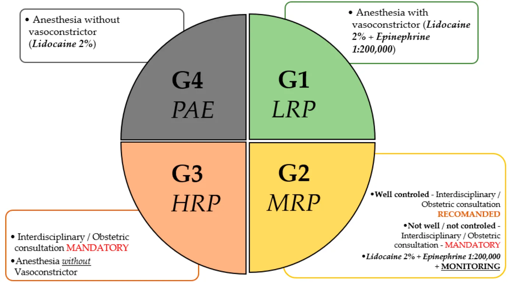
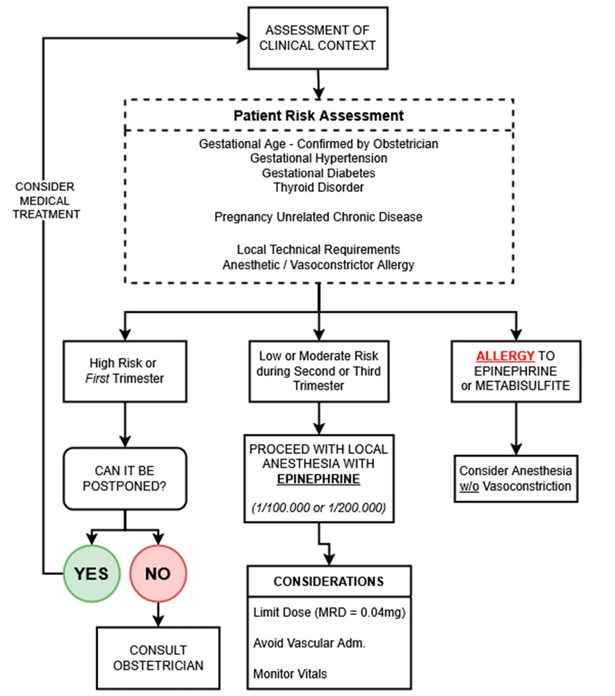

ویزیت بیمار باردار در مطب دندانپزشکی
ویزیت یک بیمار باردار همان ویزیت معمول است، با چند تفاوت که باید پیش از شروع بدانی. این مطلب به ترتیبِ خودِ ویزیت جلو میرود: چه چیزی بپرس، چه زمانی و با چه بیحسی و دارویی درمان کن، و بعد از درمان چه چیزهایی به بیمار بگو.
∆ ۱. سه سؤالی که مسیر درمان را تعیین میکند
- چند هفته باردار است؟ انتخاب مسکن و مدت مجاز آرامبخشی به سن بارداری بستگی دارد (بند ۵ و ۶).
- بیماری زمینهای یا عارضهی بارداری دارد؟
- اگر بیمار پرهاکلامپسی (عارضهای از بارداری که با فشار خون بالا همراه است)، بیماری قلبی عروقی ناپایدار، آریتمی شدید (بینظمی شدید ضربان قلب) یا سابقهی اخیر ترومبوآمبولی (لختهای که در رگ تشکیل شده و جابهجا شده) دارد، بیمار پرخطر است. پیش از درمان با پزشک او هماهنگ کن و از بیحسیهایی که تنگکنندهی عروقی دارند استفاده نکن (بند ۴).
- اگر بیمار فشار خون بارداری یا دیابت بارداری دارد که کنترل شده است، حین درمان پایش بیشتری لازم است و در برخی موارد پیش از درمان باید با پزشک او مشورت کرد.
- اگر بیمار دیابت، فشار خون بالا، بیماری قلبی یا ریوی، یا اختلال خونریزی دارد، پیش از درمان با پزشک او هماهنگ کن، چون این بیماریها ممکن است روی روند درمان دندانپزشکی اثر بگذارند.
- استفراغ دارد و چند وقت یک بار؟ اگر دارد، دستور شستشوی دهان بعد از استفراغ را به او بده (بند ۷).

∆ ۲. زمانبندی درمان
- درمان دندانپزشکی در هیچ هفتهای از بارداری ممنوع نیست و درمانهای پیشگیری، تشخیصی، ترمیمی و درمان ریشه در هر سهماهه قابل انجاماند.
- درد، عفونت و هر وضعیت حاد دیگری را همان موقع درمان کن و برای رسیدن به سهماههی خاصی صبر نکن.
- درمانهایی که فوریت ندارند و بیمار انتخاب کرده (مثل کارهای زیبایی) بهتر است در سهماههی دوم انجام شوند، هرچند انجامشان در سهماههی اول و سوم منع ندارد.
- درمانهای لازم را عقب نینداز و طوری برنامهریزی کن که پیش از زایمان تمام شوند، چون تأخیر در درمان خودش خطر دارد؛ برای مثال عفونت شدید یک دندان میتواند در بدن پخش شود.
∆ ۳. رادیوگرافی
- رادیوگرافی در تمام دوران بارداری ایمن است.
- هر وقت برای ارزیابی و تشخیص قطعی لازم است، آن را بگیر.
به نظر من، اگر بیمار نگران است و پیشبند در مسیر پرتو قرار نمیگیرد، استفاده از آن برای اطمینان خاطر بیمار مانعی ندارد، هرچند از نظر کاهش دوز سود قابل توجهی ندارد.
∆ ۴. حین درمان
بیحسی: اول بدان کارپول تو چه دارد
کارپولهای بیحسی معمولاً دو جزء اصلی دارند: خود مادهی بیحسکننده (مثل لیدوکائین یا پریلوکائین) و یک تنگکنندهی عروقی. تنگکنندهی عروقی رگهای محل تزریق را تنگ میکند تا بیحسی دیرتر جذب خون شود، عمیقتر و طولانیتر باشد و خونریزی کمتر شود. در بارداری، نوع تنگکنندهی عروقی مهم است، چون همهشان یکسان نیستند. سه نوع رایج آن اپینفرین، فلیپرسین و لوونوردفرین است. پیش از تزریق، روی کارپول یا جعبهی آن ترکیب را بخوان و ببین کدام تنگکنندهی عروقی در آن است.
اپینفرین (آدرنالین) مجاز
- بیحسیهایی که تنگکنندهی عروقیشان اپینفرین است، مثل لیدوکائین، مپیواکائین، پریلوکائین و بوپیواکائین همراه با اپینفرین، در بارداری قابل استفادهاند.
- اپینفرین تنها تنگکنندهی عروقی است که در بارداری ایمنی قابل قبول دارد، به شرط اینکه با دوز پایین و تکنیک درست تزریق شود.
- قبل از تزریق حتماً آسپیره کن، از کمترین غلظت مؤثر اپینفرین استفاده کن و دوز اپینفرین را در هر جلسه به حداکثر ۰٫۰۴ میلیگرم محدود کن. این مقدار تقریباً برابر ۴ میلیلیتر محلول ۱:۱۰۰٬۰۰۰ یا ۸ میلیلیتر محلول ۱:۲۰۰٬۰۰۰ است.
فلیپرسین استفاده نکن
- فلیپرسین از نظر ساختار شبیه وازوپرسین است، یکی از هورمونهای طبیعی بدن که رگها را تنگ میکند. مشکلش در بارداری این است که خاصیت اکسیتوسیک دارد، یعنی مثل هورمون اکسیتوسین که موقع زایمان رحم را منقبض میکند، میتواند باعث انقباض رحم و زایمان زودرس شود. این خطر بهخصوص در سهماههی دوم و سوم مطرح است.
- رایجترین بیحسیای که فلیپرسین دارد، سیتانست ۳٪ با اکتاپرسین (Citanest with Octapressin) است که پریلوکائین ۳٪ همراه با فلیپرسین است. اکتاپرسین همان فلیپرسین است با نام تجاری.
- پس اگر روی کارپول یا جعبه felypressin یا Octapressin نوشته شده، برای بیمار باردار استفاده نکن. خود پریلوکائین مشکلی ندارد؛ پریلوکائین همراه با اپینفرین مجاز است و مشکل فقط وقتی است که تنگکنندهی عروقیاش فلیپرسین باشد.
لوونوردفرین استفاده نکن
- لوونوردفرین تنگکنندهی عروقی دیگری است که معمولاً همراه مپیواکائین ۲٪ با غلظت ۱:۲۰٬۰۰۰ عرضه میشود. این ماده فشار خون مادر را بیشتر از اپینفرین بالا میبرد، از نظر تئوریک میتواند جریان خون رحم را کم کند، و دادهی کافی دربارهی ایمنی آن در بارداری وجود ندارد.
- اگر روی کارپول levonordefrin نوشته شده، آن را برای بیمار باردار استفاده نکن. مپیواکائین بهتنهایی یا همراه با اپینفرین مشکلی ندارد.
آرتیکائین استفاده نکن
از آرتیکائین استفاده نکن، مگر بعد از مشورت با پزشک بیمار.
حساسیت به سولفیت
محلولهای بیحسی که اپینفرین دارند، مادهای به نام متابیسولفیت دارند که بهعنوان آنتیاکسیدان اضافه میشود. اگر بیمار به سولفیت حساسیت دارد، از مپیواکائین ۳٪ بدون تنگکنندهی عروقی (ساده، plain) استفاده کن.

مواد ترمیمی
از مواد و روشهای ترمیمی استاندارد استفاده کن، ولی اگر جایگزین مناسب وجود دارد، در دوران بارداری از آمالگام استفاده نکن.
رابر دم
در درمان ریشه و کارهای ترمیمی از رابر دم استفاده کن.
وضعیت بیمار روی یونیت
- سر بیمار باید بالاتر از پاهایش باشد.
- بیمار را در وضعیت نیمهخوابیده قرار بده، تا حدی که برایش قابل تحمل است، و اجازه بده در طول کار وضعیتش را عوض کند.
- اگر بیمار بهخاطر افت فشار خون دچار سرگیجه یا تهوع شد، یک بالش کوچک زیر لگن سمت راستش بگذار یا از او بخواه کمی به سمت چپ بچرخد. در ماههای آخر بارداری، وقتی بیمار به پشت میخوابد، رحم بزرگشده روی رگهای اصلی شکم (آئورت و ورید اجوف تحتانی) فشار میآورد و خون کمتری به قلب برمیگردد؛ چرخیدن به چپ این فشار را برمیدارد.
پایش
در طول درمان علائم حیاتی بیمار (فشار خون و ضربان قلب) را پایش کن و در بیماران با ریسک متوسط و بالا، بعد از درمان هم مدتی بیمار را تحت نظر داشته باش.
∆ ۵. دارو
مسکن
- مجاز استامینوفن در تمام بارداری مجاز است و انتخاب اول است، چون درد دهان اغلب بدون مسکنهای مخدر کنترل میشود.
- با محدودیت مسکنهای مخدر یا اپیوئیدها (استامینوفن کدئین، هیدروکودون، اکسیکودون، کدئین، مپریدین و مورفین) مجازند، ولی با کمترین دوز و کوتاهترین مدت، که معمولاً کمتر از ۳ روز است، و بدون نسخهی تکراری تا خطر وابستگی کم شود.
- با محدودیت ایبوپروفن، ناپروکسن و آسپرین فقط در بازههای مشخصی از بارداری مجازند (بند ۶).
آنتیبیوتیک
- مجاز آموکسیسیلین، پنیسیلین، سفالوسپورینها (مثل سفالکسین)، کلیندامایسین و مترونیدازول.
- استفاده نکن سیپروفلوکساسین، لووفلوکساسین، موکسیفلوکساسین و کلاریترومایسین.
- هرگز تتراسایکلین هرگز نباید در بارداری تجویز شود.
آرامبخشی و بیهوشی
- استفاده نکن از نیتروس اکساید (گازی که از راه بینی داده میشود تا بیمار آرام شود) استفاده نکن، مگر بعد از مشورت با پزشک بیمار.
- با مشورت بیهوشی عمومی، آرامبخشی وریدی (آرامبخش تزریقی در رگ) و آرامبخشی استنشاقی (بهتنهایی یا همراه با قرص آرامبخش) فقط بعد از مشورت با پزشک بیمار انجام شود.
دهانشویه
- در بارداری از محصولات بدون الکل استفاده شود.
- مجاز دهانشویهی کلرهگزیدین، دهانشویهی ستیل پیریدینیوم کلراید (CPC) و زایلیتول (شیرینکنندهای که باکتریهای عامل پوسیدگی را کم میکند).
∆ ۶. چه چیزی با سن بارداری عوض میشود
- تا هفتهی ۱۲ ایبوپروفن، ناپروکسن و آسپرین نباید مصرف شوند و مسکن انتخابی استامینوفن است.
- هفتهی ۱۳ تا ۲۰ ایبوپروفن، ناپروکسن و آسپرین را میتوان برای مدت کوتاه، حداکثر ۴۸ تا ۷۲ ساعت، تجویز کرد.
- هفتهی ۲۰ تا ۲۷ مصرف ایبوپروفن، ناپروکسن و آسپرین باید محدود باشد.
- سهماههی سوم ایبوپروفن، ناپروکسن و آسپرین نباید مصرف شوند. اگر در سهماههی سوم بیهوشی عمومی یا آرامبخشی (با مشورت پزشک) لازم است، مدت آن باید کمتر از ۳ ساعت باشد. در بیحسی، خطر فلیپرسین در این دوره بیشتر است (بند ۴).
استثنای آسپرین با دوز پایین: آسپرین با دوز پایین (معمولاً آسپرین بچه) از هفتهی ۱۲ به بعد برای زنانی که در معرض خطر بالای پرهاکلامپسی هستند مجاز است.
∆ ۷. دستورهای مخصوص بارداری برای بیمار
- به بیمار توضیح بده که تغییرات بدن در بارداری میتواند لثه را دردناک یا متورم کند و باعث خونریزی آن شود. به این حالت ژنژیویت (التهاب لثه) میگویند و اگر درمان نشود ممکن است به بیماری پریودنتال (بیماری بافتهای نگهدارندهی دندان) و در نهایت از دست رفتن دندان برسد.
- بعد از هر بار استفراغ، دهانش را با محلول یک قاشق چایخوری جوش شیرین در یک لیوان آب بشوید تا اسید به دندانها آسیب نزند.
- اگر حالت تهوع دارد، به جای وعدههای بزرگ، در طول روز مقدار کمی غذای سالم بخورد.
- هر شب از یک دهانشویهی فلورایددار بدون الکل استفاده کند.
- بعد از غذا آدامس یا محصولات حاوی زایلیتول مصرف کند.
- باردار بودن و تاریخ زایمانش را به دندانپزشکی اطلاع دهد.
∆ ۸. بعد از زایمان
- نوزاد دستکم ۴ ماه و در حالت ایدهآل ۶ ماه فقط با شیر مادر تغذیه شود.
- از ۶ ماهگی، پزشک کودک دهان او را از نظر ریسک بیماریهای دهان ارزیابی کند و در صورت نیاز به درمان فوری، او را به دندانپزشک ارجاع دهد.
- کودک تا یکسالگی برای اولین بار به دندانپزشک برده شود.
∆ منابع
- Urîtu A, Buciu VB, Roi C, et al. Review of the Safety and Clinical Considerations of Vasoconstrictor Agents in Dental Anesthesia During Pregnancy. J Clin Med. 2025;14(13):4773. doi:10.3390/jcm14134773
- Oral Health Care During Pregnancy Expert Workgroup. Oral Health Care During Pregnancy: A National Consensus Statement (rev. ed.). Washington, DC: National Maternal and Child Oral Health Resource Center; 2026.
- Lee ET, Ozumba EN, Bevan JR. A randomized trial of Citanest with Octapressin for relief of pain associated with laser vaporization of the cervix. Br J Obstet Gynaecol. 1986;93(9):967-969. doi:10.1111/j.1471-0528.1986.tb08017.x
- دو شکلِ بالا (دستهبندی بیماران و الگوریتم انتخاب بیحسی) از مقالهٔ نخستِ همین فهرست با مجوز CC BY 4.0 آورده شده است.